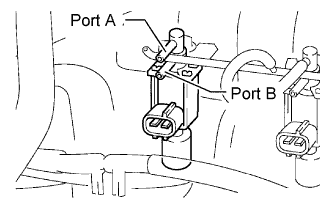
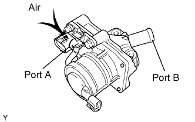
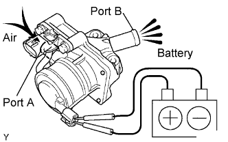

DTC P1441 Stuck Open in Secondary Air Injection Vacuum Switching Valve Bank 1 |
DTC P1444 Stuck Open in Secondary Air Injection Vacuum Switching Valve Bank 2 |
DTC P2440 Secondary Air Injection System Switching Valve Stuck Open Bank1 |


| Time A [Pressure Change] | Time B [Pressure Change] | Time C [See Chart Below] | Time D [Exhaust Pulse] | Time E [Exhaust Pulse] | Time F [See Chart Below] | DTC |
| Yes | Yes | Pattern 1 | - | No | Pattern 4 | Normal |
| Yes | No | Pattern 1 | Yes | No | Pattern 4 | |
| Yes | Yes | Pattern 1 | - | No | Pattern 1 | P1441 P1444 P2444 |
| No | Yes | Pattern 1 | - | No | Pattern 1 | |
| Yes | No | Pattern 1 | Yes | No | Pattern 1 | |
| No | No | Pattern 1 | Yes | No | Pattern 1 | |
| Yes | Yes | Pattern 1 | - | No | Pattern 2 | P1441 P1444 |
| No | Yes | Pattern 1 | - | No | Pattern 2 | |
| Yes | No | Pattern 1 | Yes | No | Pattern 2 | |
| No | No | Pattern 1 | Yes | No | Pattern 2 | |
| - | - | - | - | Yes | - | P1441 P1444 P2444 |
| Pattern | System Pressure | Exhaust Pulse |
| 1 | High | Yes |
| 2 | Low | Yes |
| 3 | High | No |
| 4 | Low | No |
| DTC Code | DTC Detection Condition | Trouble Area |
| P1441 | The ASV (bank 1) is stuck open (2 trip detection logic). |
|
| P1444 | The ASV (bank 2) is stuck open (2 trip detection logic). |
|
| P2440 | The E-ASV is stuck open (2 trip detection logic). |
|
| 1.PERFORM SECONDARY AIR INJECTION SYSTEM CHECK (AUTOMATIC MODE) |
Connect the intelligent tester to the DLC3.
Turn the engine switch on (IG) and turn the tester on.
Record the DTCs and freeze frame data.
Clear the DTCs (Click here).
Warm-up the engine.
Enter the following menus: Powertrain / Engine and ECT / Utility / Secondary Air Injection Check (Automatic Mode).
Perform the Active Test and check the pending DTC.
| Result | Proceed to |
| P1441 and/or P1444 is output | A |
| P2440, P1441 and/or P1444 is output | B |
| DTCs other than P1441, P1444 and P2440 are output | C |
| No DTC is output | D |
|
| ||||
|
| ||||
|
| ||||
| A | |
| 2.CHECK VACUUM SWITCHING VALVE |
 |
Disconnect the vacuum hoses connected to the Vacuum Switching Valve (VSV).
Connect the vacuum pump to port A shown in the illustration.
Operate the pump and check that there is no vacuum from the other port.
|
| ||||
| OK | ||
| ||
| 3.CHECK VACUUM SWITCHING VALVE |
Disconnect the vacuum hoses connected to the Vacuum Switching Valve (VSV).
Connect the vacuum pump to port A shown in the illustration.
Operate the pump and check that there is no vacuum from the other port.
|
| ||||
| OK | |
| 4.CHECK AIR SWITCHING VALVE (OPERATION) |
Remove the intake manifold (Click here).
Remove the Air Switching Valve (ASV).
 |
Blow air into port A and check that air is not discharged from port B.
 |
Apply battery positive voltage across the terminals.
Blow air into port A and check that air is discharged from port B.
| Tester Connection | Condition | Specified Condition |
| port A - port B | Always | Not discharged |
| port A - port B | Battery positive voltage applied | Discharged |
|
| ||||
| OK | ||
| ||